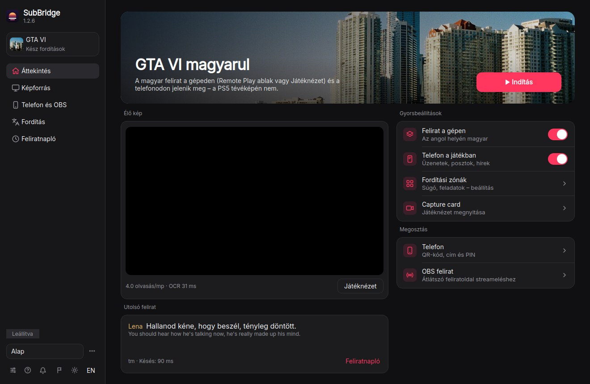

A SubBridge játék közben, élőben lefordítja az angol feliratot. A magyar szöveg ott jelenik meg, ahol az angol volt – a gépeden, és ha szeretnéd, a telefonodon is.
SubBridge translates the English subtitles live while you play. The translation appears where the English was – on your PC, and on your phone if you like.
Fontos tudni: a SubBridge a számítógépeden fut, ezért a magyar felirat a gépeden (a Remote Play ablakban vagy a capture card képén) és a telefonodon jelenik meg. A PS5 saját tévéképére nem tud írni.
Good to know: SubBridge runs on your computer, so the translation appears on your PC (in the Remote Play window or on the capture card picture) and on your phone. It cannot write onto the PS5's own TV picture.
Nem kell semmit beállítanod a játékon kívül. A program végigvezet.
Nothing to set up besides the game. The app walks you through it.
Töltsd le Windowsra vagy Linuxra, és indítsd el. Az első indításkor letölti a fordítót – ez pár perc.
Download it for Windows or Linux and start it. On first start it downloads the translator – a few minutes.
A Remote Play ablakát, vagy ha capture kártyád van, azt. A játékban kapcsold be az angol feliratot.
The Remote Play window, or your capture card if you have one. Turn on English subtitles in the game.
Kész. A felirat magyarul jelenik meg. A telefonodon egy QR-kóddal is követheted.
Done. The subtitles show in Hungarian. Follow along on your phone with a QR code too.

Egy számítógép, és a kettő közül az egyik.
A computer, and one of these two.
A PS5 képét a gépeden nézed Remote Playjel (pl. PS Remote Play vagy chiaki-ng). A magyar felirat pontosan az angol helyére kerül.
You watch the PS5 on your PC with Remote Play (e.g. PS Remote Play or chiaki-ng). The translation goes exactly where the English was.
A PS5 HDMI-n a kártyába megy, a gépen a SubBridge Játéknézetében játszol – hanggal, akár 60 fps-re simítva.
The PS5 goes into the card over HDMI and you play in SubBridge's Game View on the PC – with sound, smoothed to 60 fps.
Minden a gépeden fut, ingyen.
Everything runs on your PC, for free.
Több mint 15 000 párbeszédsor előre, egyenként lefordítva – azonnal megjelenik.
More than 15,000 dialogue lines translated one by one in advance – shown instantly.
Olvasd vissza, amit lekéstél – ki beszél, mit mond, színekkel.
Read back what you missed – who speaks and what they say, colour-coded.
Üzenetek, posztok és hírek a játék telefonján – magyarul.
Messages, posts and news on the in-game phone – translated.
OBS-be egy átlátszó feliratoldal – csak a magyar felirat.
A transparent subtitle page for OBS – just the translation.
Capture cardnál 30 helyett 60 fps képkocka-generálással, 4K-ra élesítve.
With a capture card: 60 fps instead of 30 with frame generation, sharpened up to 4K.
Nincs regisztráció, nincs előfizetés. A fordítás internet nélkül is megy.
No sign-up, no subscription. Translation works without internet too.
Ingyenes. A program magától frissül.
Free. The app updates itself.
Telefonos app (nem kötelező – böngészőben is megy)
Phone app (optional – works in the browser too)
LetöltésDownloadNem. A SubBridge a számítógépen fut, ezért a gépen (a Remote Play ablakban vagy a capture card képén) és a telefonon mutatja a feliratot. Ha tévén szeretnéd, kösd a gépet a tévére.
No. SubBridge runs on the computer, so it shows the translation there (in the Remote Play window or on the capture card picture) and on your phone. For the TV, connect the PC to it.
A kész, előre lefordított párbeszédek egyelőre csak a GTA VI-hoz vannak. Más feliratos játékkal is elindul, de ott gépi fordítás megy, ami kevésbé pontos.
The ready, pre-translated dialogue is for GTA VI only for now. Other games with subtitles work too, but with machine translation, which is less accurate.
Kapcsold be az angol feliratot. A legjobb a háttérrel („Solid”) megjelenő felirat, de háttér nélkül is felismeri. A program a pontos lépéseket is megmutatja.
Turn on English subtitles. Subtitles with a background ("Solid") work best, but it recognises them without one too. The app shows the exact steps.
Fiók nem kell. Internet csak az első letöltéskor és a frissítésekhez kell, a fordítás offline is működik.
No account. Internet is only needed for the first download and updates – translation works offline.
Bármelyik USB-s HDMI-rögzítő, amit a gép webkameraként lát. Kipróbálva: j5create JVA11 (1440p 60 fps). A PS5-ön kapcsold ki a HDR-t és a HDCP-t.
Any USB HDMI capture device the PC sees as a webcam. Tested: j5create JVA11 (1440p 60 fps). Turn off HDR and HDCP on the PS5.
A kép a gépeden marad. Csak akkor megy ki adat, ha online fordítót választasz (pl. DeepL), vagy ha hibajelentést küldesz.
The picture stays on your PC. Data only leaves it if you choose an online translator (e.g. DeepL) or send a bug report.